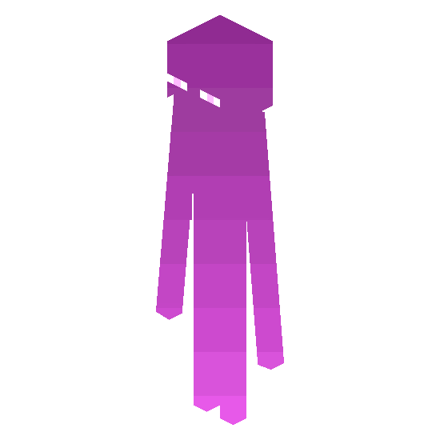

Главная
Донат
Контакты
FAQ
Ender vanilla без вайповый майнкрафт сервер
Наша главаная цель
дать игрокам
хорошее настроение
и
возможность найти друзей
Причины играть на Ender vanilla
Нет вайпов
Честное комьюнити
Бесплатная проходка
